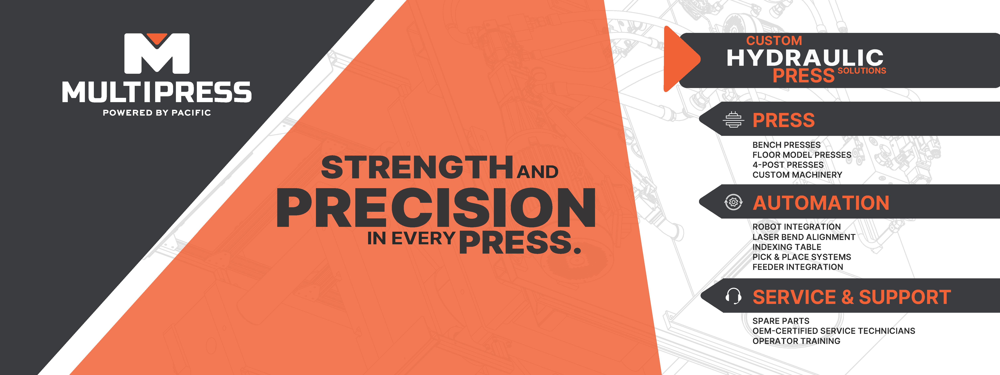
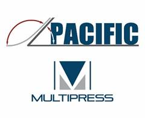
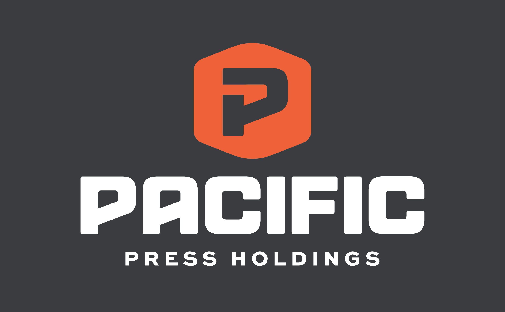
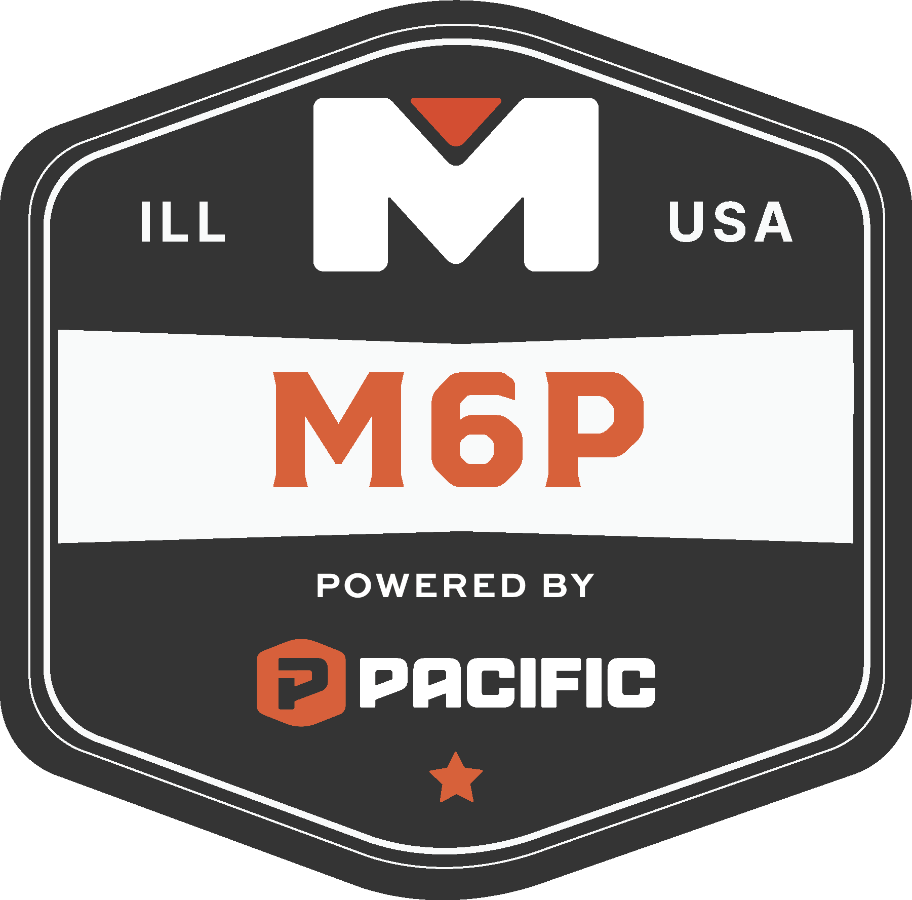
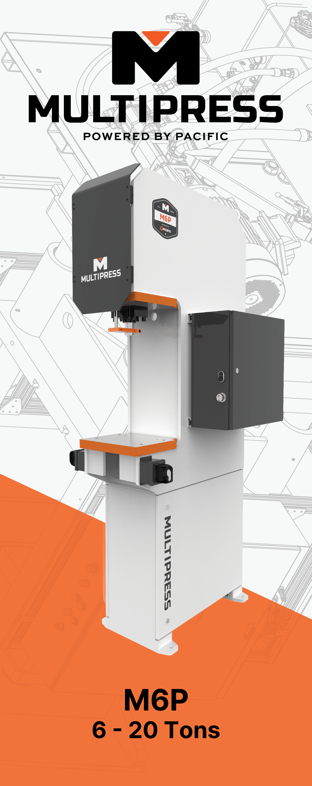
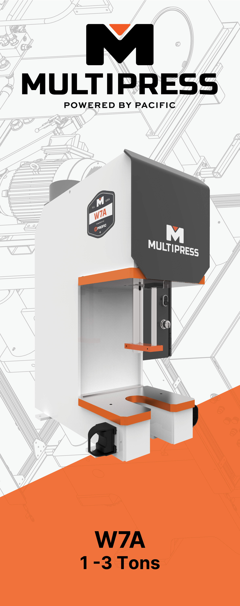
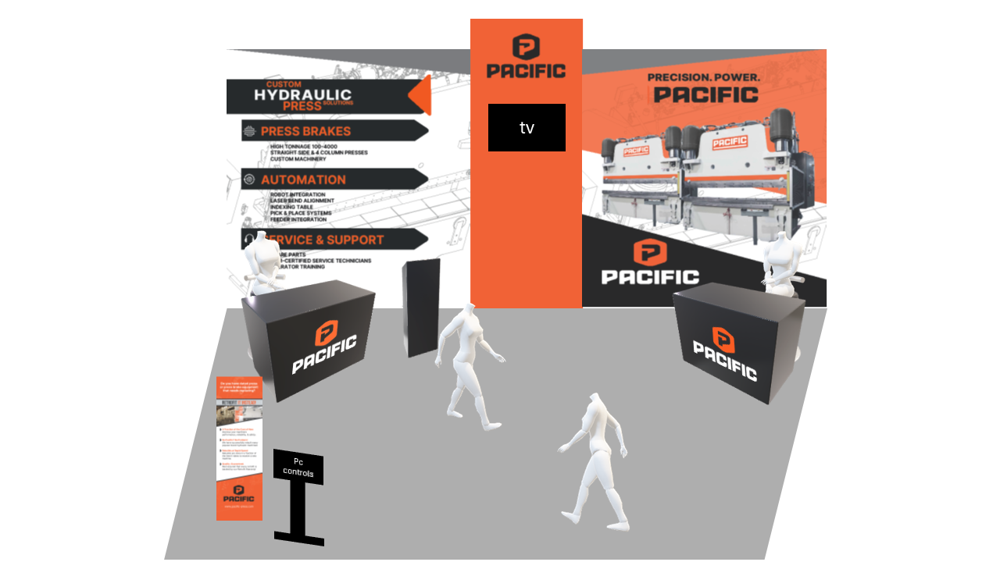
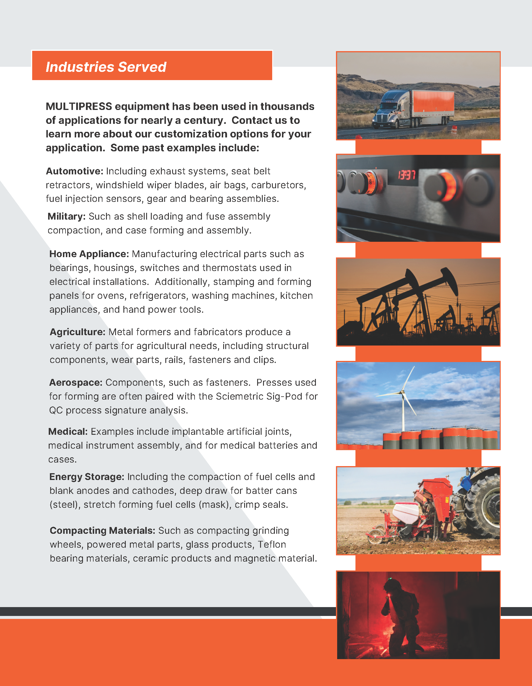
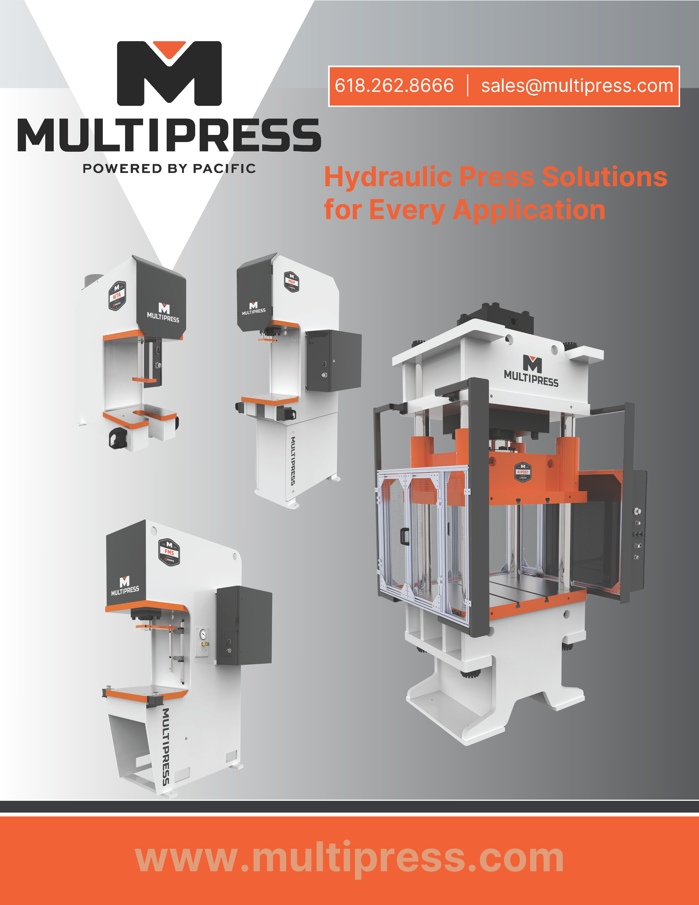
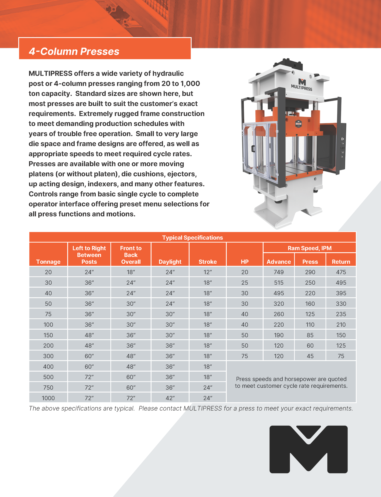

01 / Brand Development · B2B Marketing
Building a brand that stands apart.
A five-month rebrand implementation that took a new identity from logo to machines, marketing materials, physical spaces, and FABTECH.

A dated identity in an industry full of red, white, and blue.
Pacific Press needed a visual identity that better represented the company and the brands under its umbrella. Pacific Press Holdings is the parent company of Pacific Press Technologies and MULTIPRESS, so the new direction needed to work across all three.
The rebrand began in May 2024 with one major deadline: the new identity needed to be ready for FABTECH, a trade show that is the company’s biggest event of the year, in October.
Turning a new identity into a working brand.
Because the project was a significant undertaking and I was fresh out of college, an outside designer was brought in to develop and present logo directions. She created the actual new logo and provided the initial color direction.
From there, I handled the day-to-day implementation and continued visual development — taking the new identity and making it usable across the organization.


From a logo change to a cohesive visual language.
There was not a formal comprehensive brand guide. Instead, the visual system developed through the work itself. I created and refined design styles, established cohesive supporting elements, and carried those decisions into future materials to keep the brand consistent.
The result was a visual language that could move between digital, print, physical spaces, products, and events without feeling disconnected.
Brand applications
Built to live everywhere.



The deadline was real. The brand had to be ready.
Five months after the rebrand began, the new identity needed to launch in front of customers at FABTECH. I carried the new visual language into booth concepts, large-format graphics, machine graphics, displays, and supporting materials.

Consistency carried into product marketing.
The identity continued into brochures and other product-facing materials, giving the brands a more recognizable and cohesive presence.



What changed